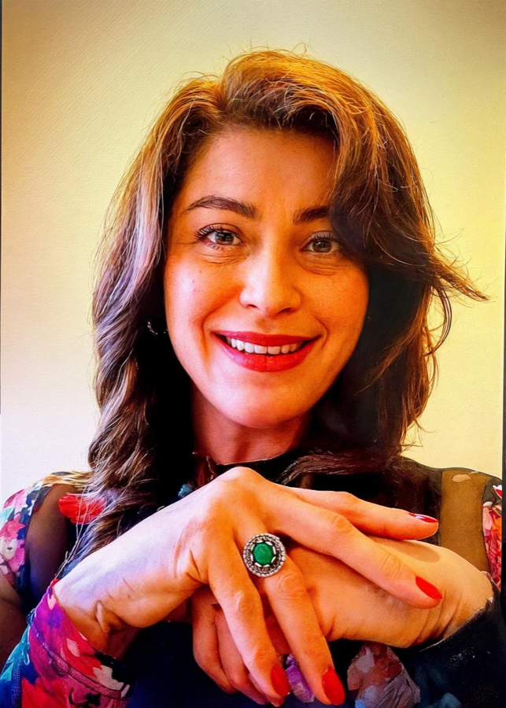
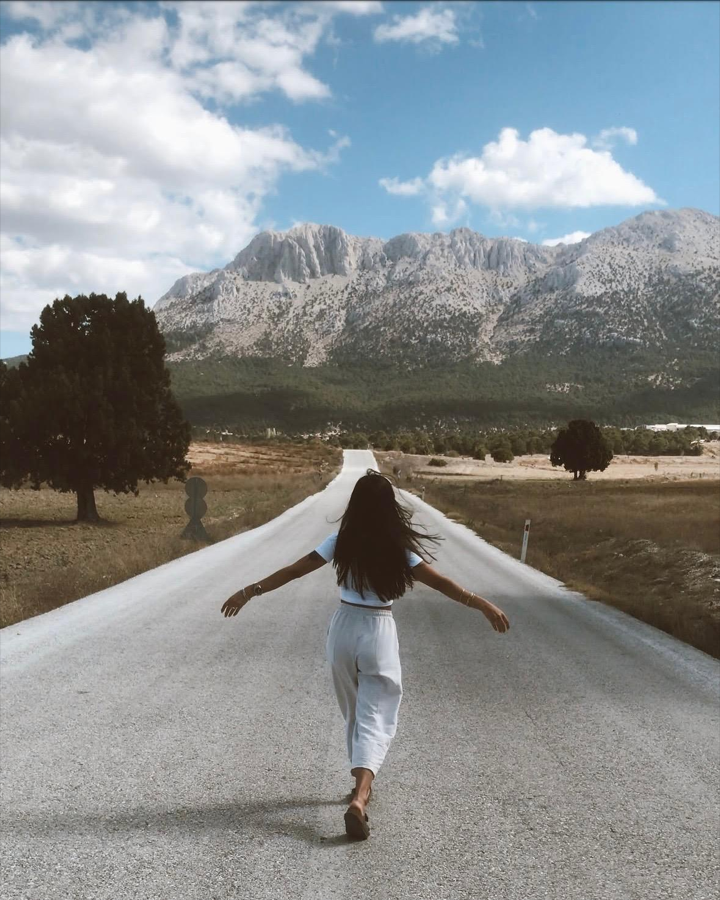
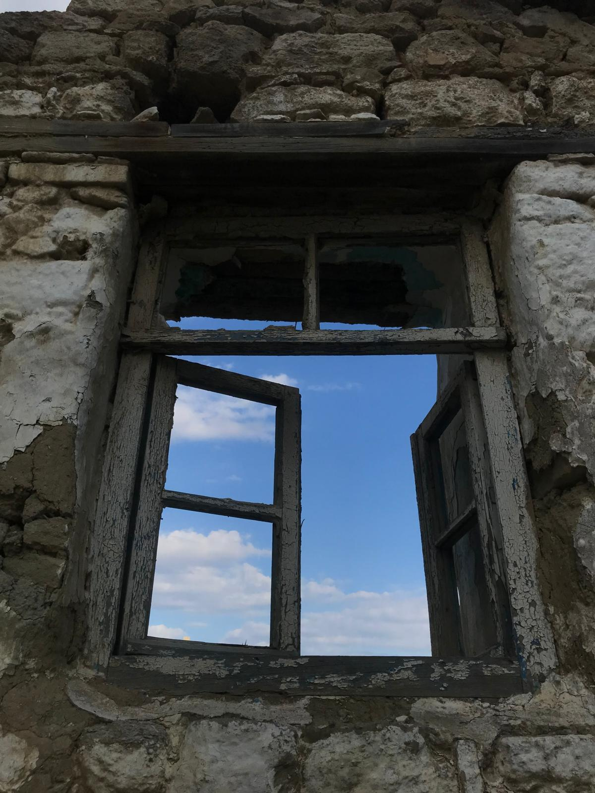
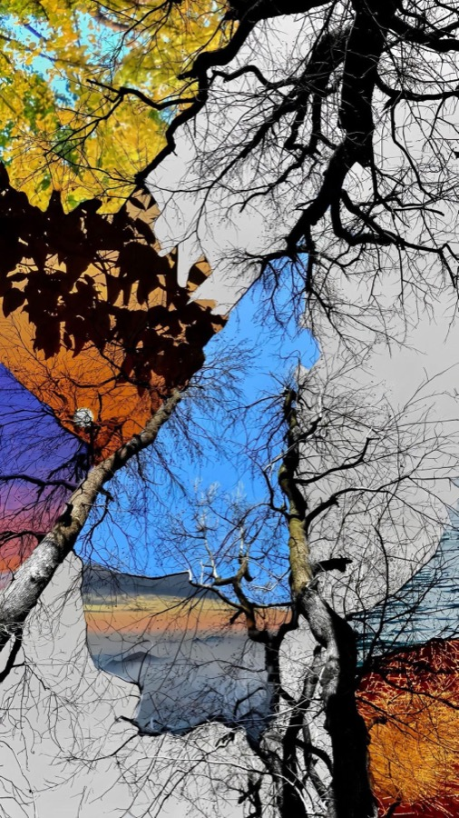

welcomehoş geldin
I AMBEN
Cigdem TasÇiğdem Taş

AboutHakkımda
As a child, I was an incurable dreamer and a bit of a rebel. To escape the heavy realities of daily life, I would sneak up to our roof in Istanbul to dance, sing, and give grand speeches to imaginary crowds.Çocukken tedavisi mümkün olmayan bir hayalperest ve biraz da asiydim. Günlük hayatın ağır gerçekliklerinden kaçmak için İstanbul'daki çatımıza gizlice çıkar, dans eder, şarkı söyler ve hayali kalabalıklara görkemli konuşmalar yapardım.
Downstairs, I filled the house with traditional folk songs, creating a safe, creative, and fiercely independent inner world. That rooftop was my first stage.Aşağıda ise evi geleneksel türkülerle doldurur, güvenli, yaratıcı ve inatla bağımsız bir iç dünya yaratırdım. O çatı benim ilk sahnemdi.

ServicesServisler
Individual therapy, couples counselling, group psychotherapy, somatic creative practice, supervision, organisational consultation, workshops/trainings and retreats.Bireysel terapi, çift danışmanlığı, grup psikoterapisi, somatik yaratıcı çalışma, süpervizyon, kurumsal danışmanlık, atölye/eğitimler ve retreatler.
Every initial consultation is an inviting opportunity to share what you're looking for and see if we feel like the right match.Her ilk görüşme, ne aradığını paylaşman ve doğru eşleşme olup olmadığımızı görmemiz için sıcak bir fırsattır.

ApproachYaklaşım
Cognitive Behavioural Therapy (CBT) is an extensively researched, highly structured psychotherapy that has been clinically proven effective for a wide range of psychological challenges, including anxiety, depression, and stress-related disorders.Bilişsel Davranışçı Terapi (BDT), kaygı, depresyon ve stresle ilişkili bozukluklar dahil olmak üzere geniş bir yelpazedeki psikolojik zorluklarda klinik olarak etkinliği kanıtlanmış, kapsamlı araştırmalarla desteklenen, son derece yapılandırılmış bir psikoterapidir.
Recommended globally as a leading first-line treatment by organizations such as the National Institute for Health and Care Excellence (NICE), CBT operates on a set of standardized, goal-oriented protocols that help you map the direct links between your thoughts, physical feelings, and daily actions.National Institute for Health and Care Excellence (NICE) gibi kuruluşlar tarafından dünya genelinde önde gelen bir birinci basamak tedavi olarak önerilen BDT, düşüncelerin, bedensel duyumların ve günlük eylemlerin arasındaki doğrudan bağlantıları haritalamana yardımcı olan standartlaştırılmış, hedef odaklı protokoller üzerine kuruludur.

Blog
Short, honest notes on anxiety, cultural identity, and what therapy actually looks like week to week.Kaygı, kültürel kimlik ve terapinin haftadan haftaya gerçekte neye benzediği üzerine kısa, samimi yazılar.
Written for anyone curious about the process before they book a first session.İlk seansı almadan önce süreci merak edenler için yazıldı.